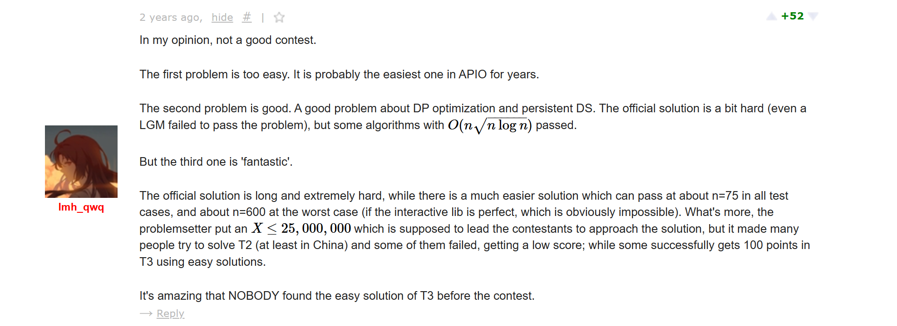
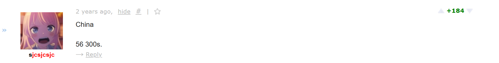
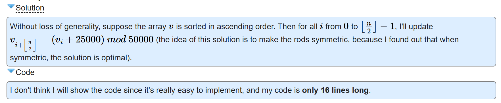

My APIO Problems
최근에 APIO 2026이 진행되었고, 필자가 Call for Tasks에 제출한 문제가 사용되었다는 사실을 확인할 수 있었다. 이로써, 필자가 3번째로, 그리고 2024년부터 2026년까지 3연속으로 출제한 APIO 문제가 세상에 공개된 셈이다. 3연속 APIO 출제 기념으로 지금껏 내가 출제한 세 문제들에 대한 간단한 생각과 비하인드를 작성해보기로 생각했다.
APIO 2024: Task C, Magic Show
https://qoj.ac/contest/1684/problem/8726
사실, 이 문제는 나의 출제 역사상 가장 큰 과오라고 해도 무방하다.
처음에 이 문제가 나올 예정이었던 대회는 "아니메컵 2기"였다. hyperbolic 님이 주최하신 그 아니메컵 2기가 아니라, 오래 전에 sait2000 님이 주최하신 아니메컵 1기 이후 같은 서버에서 유사하게 준비되다가 유기된 대회이다.
필자가 처음에 떠올렸던 풀이는 굉장히 복잡했지만, 그만큼 굉장히 우아하고 인상적인 아이디어가 많이 포함되어 있었다. APIO 2024 Call for Tasks가 진행될 때, 어떤 문제를 내볼지 고민하다가 아니메컵 2기가 진척될 기미가 보이지 않았기 때문에 이 문제를 내도 괜찮겠다는 생각이 들었다. 그래서 이를 밑져야 본전으로 Call for Tasks에 제출해보았다. 만약 정해보다 훨씬 간단한 사풀이가 존재한다면 반려될 것이고, 그 존재성을 아는 것은 그것대로 나쁘지 않은 수확일 것이라 생각하였기 때문이다.
그런데 놀랍게도 APIO 2024 Committee는 이 문제를 선정하였고, 그래서 나의 복잡한 풀이가 사실은 굉장히 효율적인 풀이일 것이라고 생각하게 되었다. 충분히 쉽고 간단한 풀이가 존재한다면 committee가 발견했을 것이라 생각하였기 때문이다.
아무튼, 나는 위원회가 지시한 대로 문제에 대한 기본적인 세팅을 하여 제공하였다. 대회 당일까지 2주 동안 아무런 연락이 없어서, 사실 APIO committee를 자처하는 사기 단체에 문제를 제출한 것일 가능성도 고려했다. 사실 생각해보면 굳이 출제자와 위원회가 많이 교류해야 할 이유가 있지는 않을 것 같긴 한데, 당시에는 이러한 의혹을 만들기에 충분했다.
아무튼 대회 당일은 내 고등학교 동창회가 있었던 날로 기억하고, 동창회에 있었던 나는 대회를 친 qwerasdfzxcl에게 연락하여 내 문제가 실제로 나왔는지 확인했다. qwerasdfzxcl이 내 문제를 제외한 모든 문제를 풀었다고 하여, 나는 이 순간 내 풀이가 사실상 최선의 풀이일 것이라 확신할 수 밖에 없었다.
그러나, 대회 이후 Codeforces의 discussion thread에서 CRT를 활용한 몹시 간단하고 효율적인 풀이가 존재한다는 사실을 깨닫고는, 나는 큰 충격에 빠졌다.

내 추론이지만, 가장 어려운 문제로 예상되었던 내 문제가 사실은 몹시 쉬웠기 때문에 중국에서는 56명의 만점자가 나왔다는 이야기 또한 존재하였다.

이러한 이유로 해당 문제를 출제한 것, 혹은 CRT를 활용한 간단한 풀이를 발견하지 못한 것은 내 출제경험 역사상 최대의 흑역사였고, 여전히 qwerasdfzxcl을 포함한 내 친구들은 이 사건을 기반으로 다양한 밈을 만들고 있다. 내 과오인 것도 맞긴 하지만, 정말로 내 문제에 이슈가 있었다면 committee가 발견했으면 좋았을 것 같다는 생각은 있다.
이 출제경험을 통해 내가 배웠던 것은, labeled tree에 대한 two-step 문제를 내는 것은 그닥 좋은 생각이 아니라는 것이다.
APIO 2025: Task C, Rotating Lines
https://qoj.ac/contest/2031/problem/9207
해당 문제는 사실 채택될 것으로 기대하지 않고 제출했었다.
문제를 만들었던 기본적인 아이디어는, 친구가 보여줬던 다음의 문제였다:
2n개의 원점을 지나는 직선이 있을 때, 임의의 두 직선 사이의 각도의 총합을 생각하자. 이 총합의 최댓값은 얼마인가?
나는 조금 생각해보았고, 이내 그래프 모델링을 이용한 간단한 풀이가 있음을 관찰했다. 각 직선들을 정점으로 취급하고, 어떤 두 정점 사이에 간선이 있을 필요충분조건을 "두 직선 사이의 각도가 0, 혹은 $\pi/2$이다"로 잡자. 이러한 방식으로 만들어지는 그래프는 몇 개의 컴포넌트를 가지고 있을 것이다.
이제 특정한 컴포넌트에 있는 모든 간선을 $d\theta$만큼 돌리는 경우를 생각하면, 이로 인해 각도의 총량은 $d\theta$에 대한 선형함수로 변화할 것이다. 따라서 어떤 방향으로 컴포넌트를 회전시키면, 이 컴포넌트와 다른 컴포넌트 사이에 최초로 간선이 추가되기 이전까지 각도의 총량이 증가할 것이다. 이를 반복하다보면 전체 그래프가 연결되는 시점이 온다.
모든 직선이 평행하거나 수직한 상황에서는 자명하게 직선을 n개씩 두 묶음으로 하여 각도를 합하는 것이 이득임이 자명하다.
물론 더 쉬운 풀이도 있고, 다양한 풀이가 존재하지만 필자는 이 풀이의 장점은 임의의 주어진 직선의 configuration에 대해서도, 특정한 연산을 통해 각도의 총량을 increment하면서 최댓값에 도달하도록 할 수 있다는 것이라고 생각하였고, 이러한 점에 기반하여 문제를 작성하고 제출하였다.
사실 그다지 아름다운 문제로 생각되지는 않아 뽑힐 것을 크게 기대하지는 않았는데, 실제로 선정되었다는 메일을 보고 다소 놀랐다.
이 문제 또한 아무런 이슈가 없었던 것은 아니었는데, 기존에 내가 제출하였던 문제는 큰 n에 대해서 효율적인 자료구조를 통한 까다로운 최적화가 요구되었기 때문이다. 이번에는 committee의 일원과 소통을 하면서 문제에 관한 세부 사항을 조정할 수 있었는데, 한 가지 제기된 문제는 이 문제가 그 아이디어의 난이도에 비해서 구현이 다소 복잡하다는 것이었고, 그래서 나는 n을 작게 바꾸는 것 또한 괜찮을 것 같다고 답하였다.
그러나 아마도 committee는 n을 줄이지 않기로 결정한 것으로 보이고, 실제 대회에는 원래의 큰 n에 대한 문제로 나타나게 되었다. 대회 당일 나는 어떤 프로그래밍 대회, 아마 SCSC에서 주최한 SCPC였을 것으로 예상된다, 에 참석한 이후 뒷풀이에 있던 상태였는데, mingyu331에게 물어봐서 내 문제가 나왔음을 확인했다. mingyu331이 내 문제에 대해서 이상한 휴리스틱 문제라고 했던 것이 인상깊었다.
실제로 discussion thread를 보니, 내 풀이와는 다른 짧고 우아한 풀이가 존재함을 알 수 있었다. https://codeforces.com/blog/entry/143015.

아마 필자의 풀이가 발상하기에는 간단한데에 비해서, 구현이 몹시 까다롭기 때문에 적지 않은 사람이 저러한 방법을 통해 해결한 것으로 보이는데, 위의 풀이는 구현이 간결한 대신 발상하기 쉽지 않은 것으로 보이며, 사실 몹시 우아하기 때문에 위의 문제보다는 이슈가 덜한 편이라고 생각했다.
n이 조금 더 작은 값이었다면 사실 다양한 난이도있는 풀이가 존재하는 좋은 문제가 될 수 있었을 것이라 생각하긴 하지만, 그래도 작년처럼 심각한 문제가 터지지 않았다는 점에서 안도하였다.
APIO 2026: Task B, Navigation
https://qoj.ac/contest/3763/problem/17644
두 차례의 APIO 출제경험을 통해 국제대회의 Call for Tasks에 문제를 제출하는 재미를 느낀 나는, 3연속 APIO 출제 타이틀을 얻기 위해서 다양한 문제를 만들어보았고, 이는 그러한 과정에서 만들어진 하나의 준수한 문제중 하나이다.
사실 문제가 만들어지는 과정은 그리 어렵지 않았다. 나는 최근에 랜덤한 객체들을 조합해서 문제를 만드는 방식을 시도하고 있었고, 내가 조합하기로 결정한 요소는 "방향 결정"과 "컬러링"이었다. 일반적인 트리 위에서는 할 수 있는것이 많지 않다는 것을 깨닫고, 트리의 차수에 대한 조건을 추가하였고, 문제가 아름답게 풀리도록 할 수 있는 조건의 절충안 여러개를 시도해보았다.
필자가 발견한 최대의 절충안은 차수가 1 혹은 5 이상인 트리에서 최대 4개의 색상을 활용하는 버전이었다. 그리고 이는 실제 문제의 subtask 3, 4에 대응된다. 그러나 유감스럽게도 이는 필자가 잠을 자기 위해 누워있던 상태에서 발견한 풀이였으며, 일어나고 나서는 색상 5개가 한계인 것으로 모종의 이유로 잘못 생각한 상태에서 제출하기 위한 문제와 풀이를 작성하였다. 풀이를 작성할 당시에 내가 원래 느꼈던 난이도보다 다소 쉽다는 느낌이 들었는데, 아마 그러한 이유였을 것으로 생각된다.
아무튼, 그렇게 하여 이 문제를 비롯한 여러 다른 문제와 함께 APIO 2026 Call for Tasks에 문제를 제출하였고, 결과적으로 이 문제만이 선정되었다.
위의 이미지는 Shinonome Ena로, 딱히 넣을만한 사진이 없어서 넣었다. Shinonome Ena는 귀엽다.
dadas08에게 물어보아 실제 문제를 보니, committee가 알아서 차수가 5 이상인 제약하에서 최대 색상 개수를 4로 줄여주었고, 추가로 차수가 조금 더 작은 조건에 대해 색상을 더 많이 사용가능한 subtask 5를 추가한 것을 보았다. 이 부분문제에 대해서 딱히 생각해보진 않았지만, 아마 그렇게 어렵진 않지 않을까? 나중에 풀어볼 것 같다.
사실 필자는 이 문제가 그리 어렵지 않은 중간 난이도의 문제가 될 것이라고 예상했는데, 이 문제를 해결한 사람이 없는 것을 보고는 큰 충격을 받았다. 아마 다수의 중국인이 본 대회를 치지 않았기 때문이 아닐까? 중국의 LGM들이 이 문제에서 만점을 받지 못하는 세계선이 상상되지 않는다.
사실 이 문제 또한 필자의 생각과는 다른 풀이가 있었는데, 각자의 일장일단이 있다고 생각된다. 필자는 단순히 가능한 모든 6의 partition 에 대해 경우의 수를 잘 나눠서 최대한 지능을 사용하지 않는 해결책을 적용하였다.
아무튼, 이 문제를 출제함으로써 필자는 3연속 APIO 출제 타이틀을 얻을 수 있었고, 이번에 출제한 문제는 나름 만족스러운 퀄리티를 가지고 있었다고 생각했기 때문에 해당 출제는 만족스럽다는 인상을 가질 수 있었다.
마치며
예전에는 모종의 이유로 문제를 열심히 풀었지만, 최근에는 사실 문제를 그리 많이 풀지 않고 있다. 이는 필자가 바빠진 것도 있으며, 실력을 길러서 얻을만한 것이 별로 없는 이유도 있다. 그래서 최근에는 흥미로워보이는 문제들만 풀어보며, 문제를 만드는 것에 생각을 많이 할애하는 것 같다. 앞으로도 조금 더 흥미롭고 인상적인 문제를 만들기 위해 출제에 정진하게 될 것 같다.